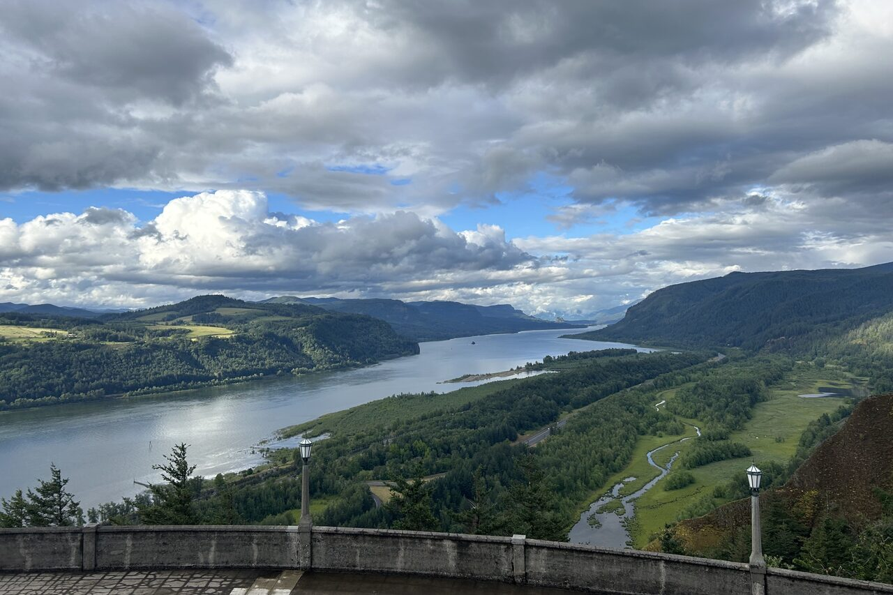
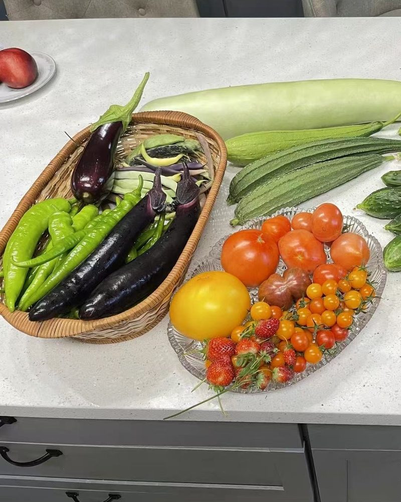
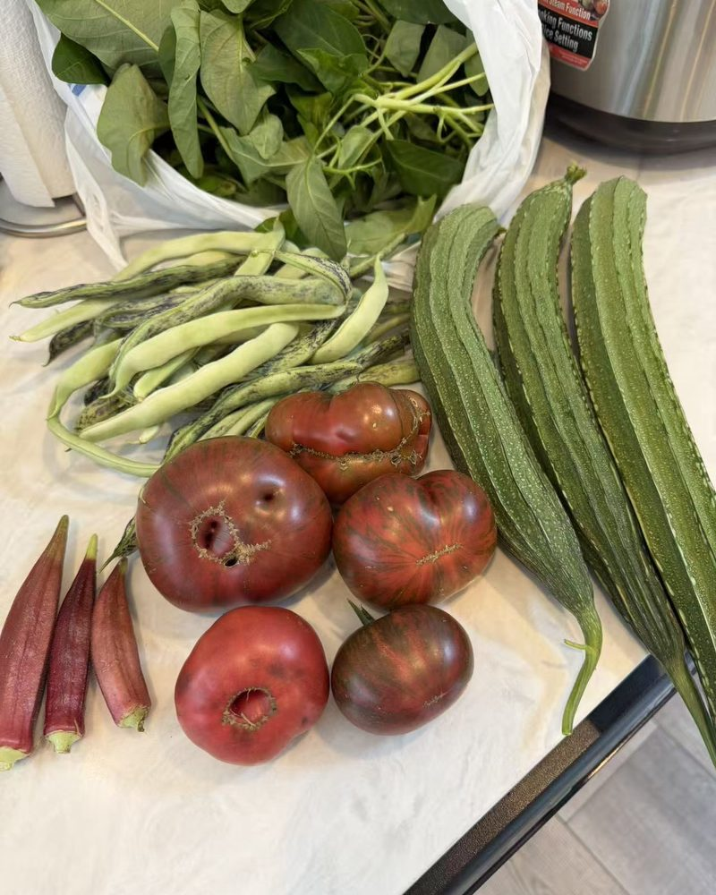
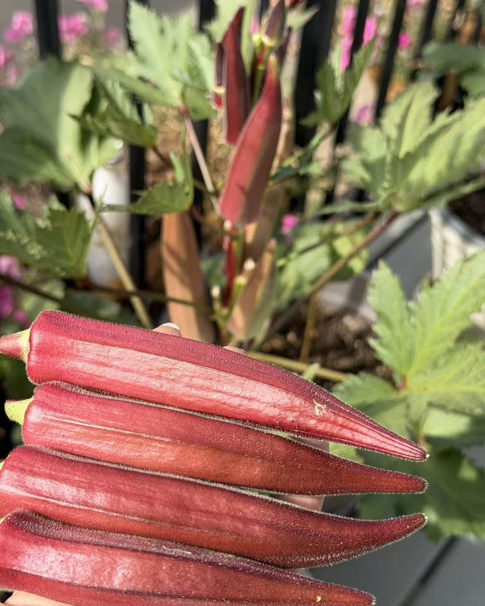
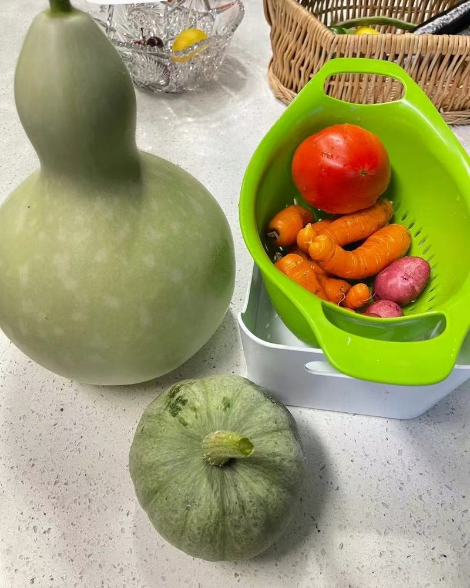

Soil, perennials and native plants
Elaine Holloway
Soil, native plants and perennials
- Born and raised in the Portland area
- Studied environmental science at Portland State
- Focus: soil health, native and pollinator plants
Elaine Holloway was born and raised in the greater Portland area, where she grew up helping family tend backyard vegetable plots, native plant borders and container gardens. A lifelong gardener, she focuses on regional horticulture: building healthy soil, managing moisture through wet Northwest winters and dry summers, choosing native and climate-adapted plants, and adding pollinator-friendly, low-maintenance plantings to home gardens. She studied environmental science with a focus on horticulture at Portland State University, including plant ecology, sustainable agriculture and native plants. Where Jigmey covers vegetables and planting dates, Elaine covers the soil underneath them and the perennials, herbs and flowers around them.
Growing results
Harvests from the home garden.

Eggplant, long green peppers and beans in the basket, with a bottle gourd, luffa, small cucumbers, slicing, yellow and cherry tomatoes and strawberries. 
Dark heirloom tomatoes, speckled beans, red okra and ridged luffa, with a bag of leafy greens. 
Red okra, picked young and tender, with more pods still growing on the plant. 
A bottle gourd and a green winter squash, with carrots, red potatoes and a tomato.
Articles by Elaine 10
 Soil pH in the Northwest: Testing, Lime and When to Leave It Alone Rain-washed west-side soils run acidic and east-side soils alkaline. Testing your pH and when lime or sulfur is worth adding.
Soil pH in the Northwest: Testing, Lime and When to Leave It Alone Rain-washed west-side soils run acidic and east-side soils alkaline. Testing your pH and when lime or sulfur is worth adding. Growing Dahlias in the Northwest Dahlia tubers rot in cold, wet soil, so timing matters more than anything. Planting, staking, and digging or mulching in winter.
Growing Dahlias in the Northwest Dahlia tubers rot in cold, wet soil, so timing matters more than anything. Planting, staking, and digging or mulching in winter. Growing Blueberries in the Pacific Northwest Acidic, rainy west-side soil is close to what blueberries want. Choosing two varieties that pollinate each other, planting, and pruning.
Growing Blueberries in the Pacific Northwest Acidic, rainy west-side soil is close to what blueberries want. Choosing two varieties that pollinate each other, planting, and pruning. Growing Strawberries in the Pacific Northwest June-bearers give one big crop, everbearers a trickle all summer. Planting, mulching against rot, and renewing an old patch.
Growing Strawberries in the Pacific Northwest June-bearers give one big crop, everbearers a trickle all summer. Planting, mulching against rot, and renewing an old patch. Native Plants for a Northwest Pollinator Garden Red-flowering currant in March, asters in October: Northwest natives that keep bees and hummingbirds fed from late winter to fall.
Native Plants for a Northwest Pollinator Garden Red-flowering currant in March, asters in October: Northwest natives that keep bees and hummingbirds fed from late winter to fall. Winter Cover Crops for Northwest Vegetable Beds Crimson clover, fava beans or cereal rye sown in early fall hold bare soil through the winter rain and feed it by spring.
Winter Cover Crops for Northwest Vegetable Beds Crimson clover, fava beans or cereal rye sown in early fall hold bare soil through the winter rain and feed it by spring. How Much to Water Vegetables in a Dry Northwest Summer Northwest summers are close to rainless from July to September. How much vegetables need each week, and drip, soaker hose or hand watering.
How Much to Water Vegetables in a Dry Northwest Summer Northwest summers are close to rainless from July to September. How much vegetables need each week, and drip, soaker hose or hand watering. Raised Beds for Rainy Northwest Gardens Raised beds drain after winter rain and warm up sooner in spring. Sizes, depth, what to fill them with, and lumber choices.
Raised Beds for Rainy Northwest Gardens Raised beds drain after winter rain and warm up sooner in spring. Sizes, depth, what to fill them with, and lumber choices. How to Control Slugs in a Northwest Garden Gray garden slugs do most of the damage in Northwest beds. When they hatch, how to tell their damage apart, and which controls are pet-safe.
How to Control Slugs in a Northwest Garden Gray garden slugs do most of the damage in Northwest beds. When they hatch, how to tell their damage apart, and which controls are pet-safe. Why Northwest Gardeners Should Plant by Soil Temperature Beans and squash rot in cold soil even after the last frost. A cheap soil thermometer settles when it's warm enough to plant.
Why Northwest Gardeners Should Plant by Soil Temperature Beans and squash rot in cold soil even after the last frost. A cheap soil thermometer settles when it's warm enough to plant.
Questions for Elaine or a correction? Email info@rainlinegarden.org.